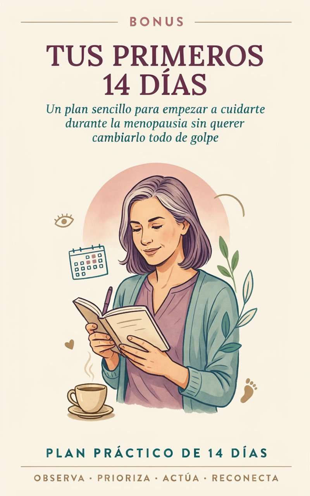
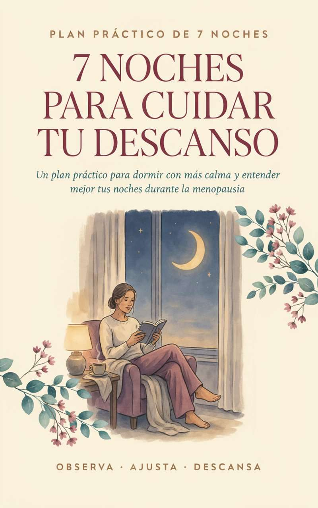
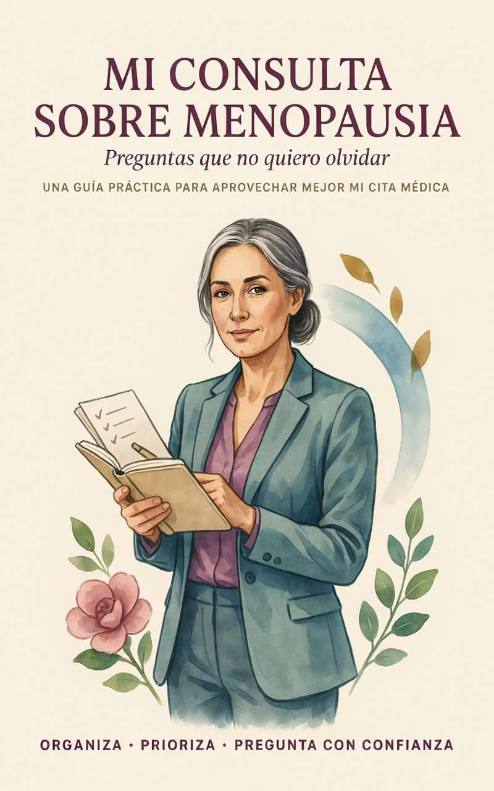
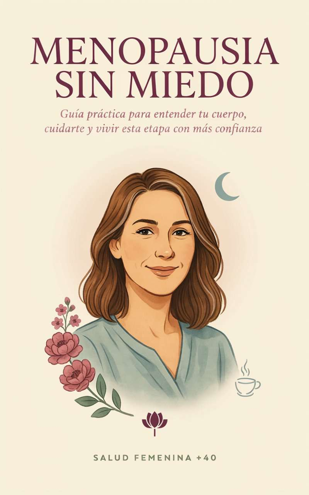
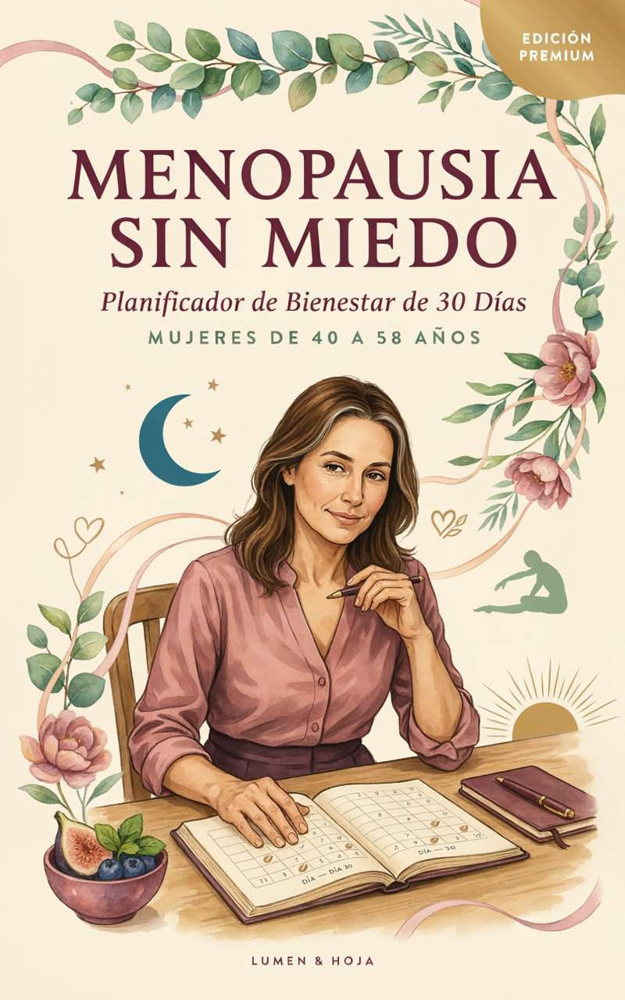

Guía práctica para mujeres +40
“Mi cuerpo cambió y no sé qué hacer.”
Si alguna vez lo pensaste, esta guía es para ti. Entiende lo que estás viviendo y descubre por dónde empezar a cuidarte.




¿Alguna de estas frases suena a ti?
Toca cada tarjeta para ver cómo te acompaña la guía.
La idea central
Esta guía no busca que vuelvas a ser la mujer que eras antes. Busca ayudarte a comprender y cuidar mejor a la mujer que eres hoy.
“No sé qué me está pasando.”
“Entiendo mejor mi cuerpo y sé cuál puede ser mi siguiente paso.”
Diez capítulos, de entender a actuar.
Cada capítulo cierra con “lo más importante que quiero que recuerdes” y casi todos incluyen una herramienta práctica.
Así se ve por dentro.
Lectura clara, frases que se quedan contigo y herramientas para completar. Puedes leerla en el celular o imprimir las fichas.
- Lenguaje sencillo, sin tecnicismos innecesarios
- Resumen de lo esencial al final de cada capítulo
- Fichas prácticas para observar y anotar
Toca una página para verla en grande.
Cuatro preguntas que te llevarás para siempre.
No necesitas recordar cada página. Cuando algo cambie, vuelve a estas preguntas.
- 1
¿Qué estoy sintiendo?
Ponle nombre.
- 2
¿Existe algún patrón?
Observa antes de sacar conclusiones.
- 3
¿Qué puedo hacer ahora?
Elige una acción concreta.
- 4
¿Necesito ayuda?
Reconoce cuándo es momento de consultar.
Incluidos con tu compra
Tres bonos que llegan paso a paso.
Se liberan de forma progresiva para que no recibas todo de golpe y puedas leer, aplicar y avanzar a tu ritmo.
-
Día0
Menopausia sin miedo
La guía completa: 10 capítulos y 8 herramientas prácticas. Acceso inmediato.
-
Día3
Bono 1
Tus primeros 14 días
Un plan sencillo para empezar a aplicar pequeños cambios sin intentar hacerlo todo de golpe.
-
Día6
Bono 2
7 noches para cuidar tu descanso
Observa qué puede estar interfiriendo con tu sueño y construye una rutina nocturna más amable.
-
Día8
Bono 3
Mi consulta sobre menopausia
Organiza síntomas, dudas, prioridades y preguntas antes de tu consulta profesional.
Todo lo que recibes hoy.
- Menopausia sin miedoEbook en PDF: 10 capítulos + 8 herramientas
- Bono 1: Tus primeros 14 díasSe desbloquea el día 3
- Bono 2: 7 noches para cuidar tu descansoSe desbloquea el día 6
- Bono 3: Mi consulta sobre menopausiaSe desbloquea el día 8
Guía + 3 bonos
US$17.97
Pago único. Sin suscripciones.
Quiero mi guía- Acceso inmediato por correo
- Garantía de 7 días
- Pago seguro con Hotmart
- Léela en el celular o imprímela

Opcional en el checkout
Plan Menopausia +40: 30 días para volver a cuidarte
Planificador para convertir lo aprendido en acciones: 4 semanas, sueño, energía, movimiento y balance final. Lo puedes añadir al pagar por US$9.97.
Léela con calma. Si no es para ti, te devolvemos tu dinero.
Tienes 7 días de garantía. Si sientes que la guía no es lo que buscabas, solicitas el reembolso directamente desde Hotmart.
¿Es para ti?
Es para ti si
- Tienes más de 40 y notas cambios que no terminas de entender.
- Estás en la perimenopausia o la menopausia, o crees que podrías estarlo.
- Quieres información clara y práctica, no teoría interminable.
- Quieres llegar mejor preparada a tu consulta médica.
No es para ti si
- Buscas una cura o un resultado inmediato.
- Esperas que reemplace la atención de un profesional de salud.
- Quieres una dieta estricta o un plan para “volver a tu cuerpo de antes”.
Una publicación de Nexo Editorial.
Creamos recursos prácticos y accesibles que ayudan a comprender distintos aspectos de la vida y a convertir la información en acciones concretas.
Fuentes consultadas como referencia
- National Institute on Aging (NIH)
- American College of Obstetricians and Gynecologists (ACOG)
- The Menopause Society
- U.S. Department of Health and Human Services
Estas organizaciones no están afiliadas a esta guía ni la respaldan. Se citan como fuentes de información.
Preguntas frecuentes
¿Cómo sé si lo que siento tiene que ver con la menopausia?
El primer capítulo te ayuda a ubicarte entre perimenopausia, menopausia y posmenopausia, y explica por qué no todo lo que ocurre después de los 40 es menopausia. La confirmación siempre corresponde a un profesional de salud, y el Bono 3 te ayuda a preparar esa conversación.
Ya hay mucha información gratis en internet. ¿Qué tiene de diferente?
Muchas veces el problema no es la falta de información, sino que llega desordenada y contradictoria. Aquí la tienes organizada por temas, basada en fuentes de salud confiables y acompañada de herramientas para decidir por dónde empezar.
No tengo tiempo para otro plan.
No necesitas leerla de una vez ni cambiarlo todo. La guía te propone elegir una o dos prioridades y definir una acción mínima. Los bonos llegan de forma progresiva justamente para no saturarte.
Ya intenté cambiar hábitos antes y no fui constante.
La guía parte de la constancia, no de la perfección. Incluye cómo revisar tu plan después de dos semanas y qué hacer cuando tengas una mala semana.
¿Es información complicada o llena de teoría?
Está escrita en lenguaje claro, con resúmenes de lo esencial al final de cada capítulo y fichas prácticas para observar y anotar.
¿Reemplaza a mi médico?
No. Es una guía educativa que complementa la atención profesional. Te ayuda a entender, observar y llegar con mejores preguntas a tu consulta.
¿En qué formato la recibo?
En PDF. Puedes leerla en el celular, la tablet o la computadora, o imprimir las herramientas. Recibes el acceso por correo apenas se confirma el pago.
¿Cuándo recibo los bonos?
El Bono 1 se desbloquea el día 3, el Bono 2 el día 6 y el Bono 3 el día 8, contando desde tu compra.
¿Y si no es para mí?
Tienes 7 días de garantía. Solicitas el reembolso desde Hotmart y te devolvemos el 100% de tu dinero.
Empieza hoy
Tu cuerpo seguirá cambiando. Tú también. Y eso no significa que estés perdiendo tu historia. Significa que todavía la estás escribiendo.
Quiero mi guíaUS$17.97 · Ebook + 3 bonos · Acceso inmediato